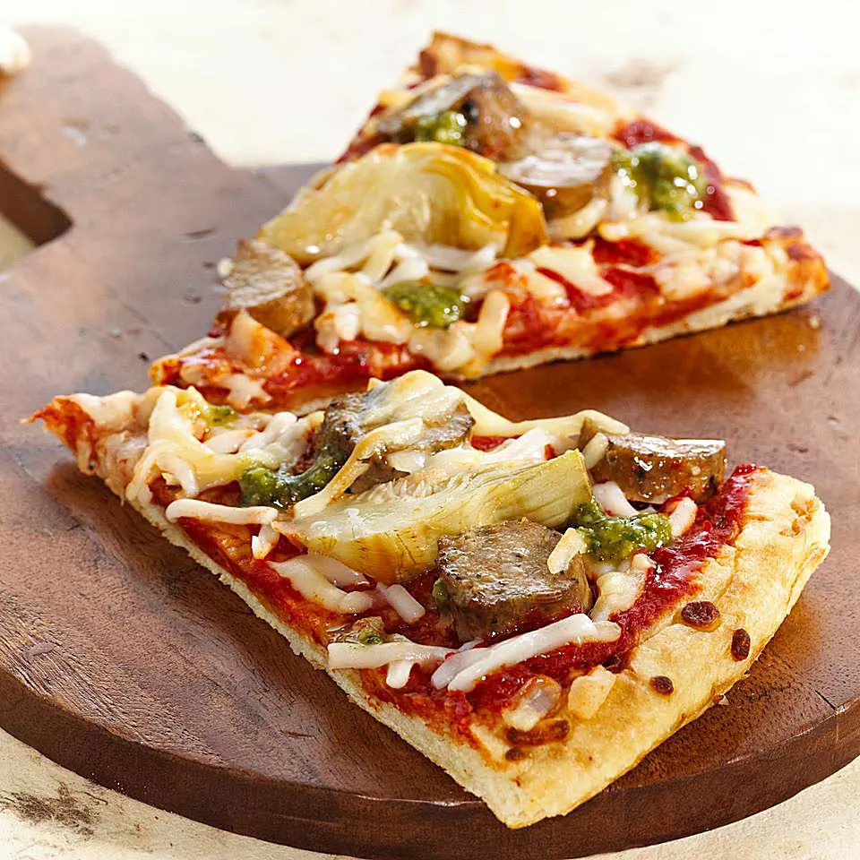

My Favorite Recipes
Soup

Beethoven once said Only the pure of heart can make a good soup
.Well,here's my attempt at doing just that!
- Heat the oil in a saucepan over a medium heat and fry the onion for 5 mins until soft. In a jug,make 750ml stock using the stock cube and boiling water.
Pour into the pan, add the sweet potato, carrots, peppers, stock and tomatoes, then season with pepper.Cover the pan and simmer for 20 minutes
- Preheat the grill to medium-high. Toast the bread, then sprinkle the cheese on one side of each slice and grill until melted. Cut star shapes from
each piece of toast using a cookie cutter, or cut star shapes with scissors.
- Blend the soup until smooth, add the coconut milk and season with black pepper. Stir well to combine, then ladle into bowls. Top with the cheesy stars and a twist of black pepper.
- Enjoy
Salad
List of ingredients
- 2 tablespoons sugar (soft dark brown sugar preferred),2 tsp soy sauce,250g (1 cup) dried rice noodles,
- 4 tablespoons vegetable oil,3 tablespoons rice vinegar,1 tablespoon til (sesame) seeds, toasted>
- 1 head iceberg or romaine lettuce - rinsed, dried and chopped,4 boneless, skinless chicken- cooked and chopped
3 green onions, chopped,1 tablespoon til (sesame) seeds, toasted
Who can resist a salad ! Here's one of my Favorites.
- Prepare the dressing 30 minutes ahead of time by combining the brown sugar, soy sauce, sesame oil, vegetable oil and rice vinegar in a small jar with a tight fitting lid. Shake well.
- Heat a frying pan over medium high heat with a few tablespoons of oil and break off bits of the noodles and fry them. They will puff up in the pan, so only add a few at a time.
As they begin to puff up, remove and drain them on kitchen roll.
- n a large bowl, combine the lettuce, chicken, spring onions and sesame seeds. Leave in the fridge to chill about 10 minutes.
Just before serving add the cooked rice noodles and toss with desired amount of dressing. Serve immediately in large bowls.
- Enjoy
Pizza

List of ingredients
12 oz vegetarian sausages (Try Italian-style Smart Sausages),1 tbsp olive oil
1 11-inch pizza crust (thin, pre-baked),3/4 cup tomato sauce,1/4 cup vegan pesto (prepared )
1 14 oz can artichoke hearts (drained and chopped),1 cup vegan mozzarella cheese substitute (grated)
- Pre-heat oven to 450 degrees.In a skillet, heat oil over medium heat. Add vegetarian sausages; cook 6-8 minutes or until browned. Cut into 1/2-inch rounds.
- Place pizza crust on baking sheet and spread with tomato sauce, leaving a 1-inch border. Scatter sausage and artichokes on top, then sprinkle with non-dairy cheese
- Bake pizza for 12-14 minutes or until cheese is melted and golden. Remove from oven, dot with pesto; bake 2 minutes more.
- Enjoy